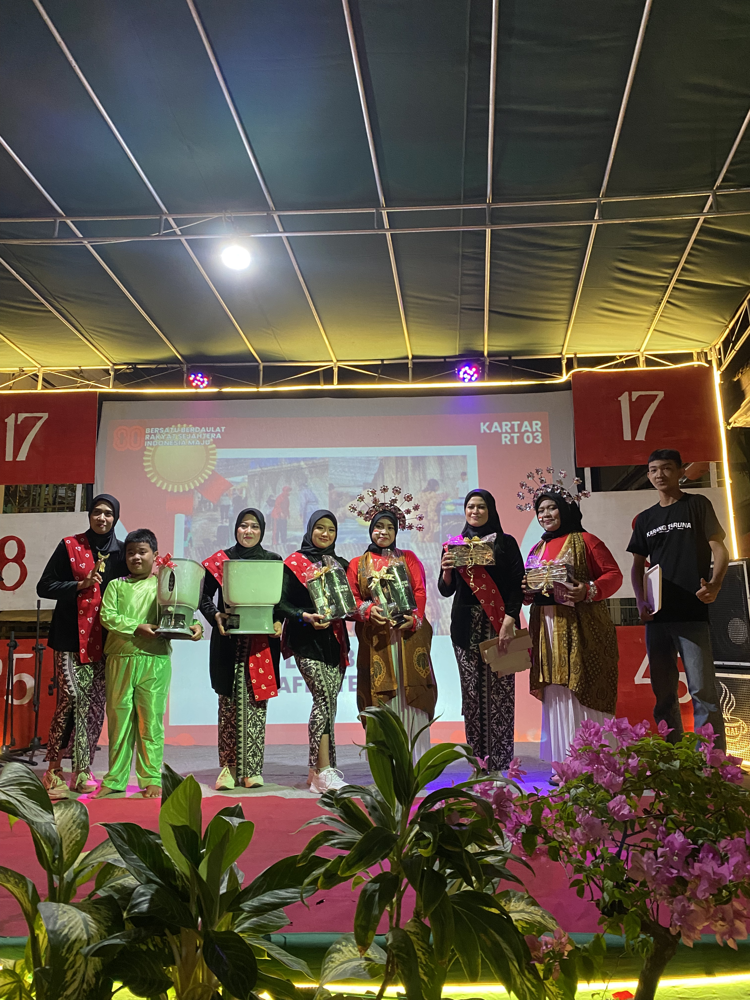

Dokumentasi Guyub Rukun Warga RT 03
Momen kebersamaan dalam berbagai kegiatan sosial, keagamaan, dan gotong royong yang mempererat tali silaturahmi kita.



Transparansi kegiatan, dokumentasi keguyuban, dan akses dokumen publik untuk seluruh warga RT 03. Pantau terus agenda lingkungan kita di sini.
Persiapan menyambut HUT RI ke-81. Warga diharapkan membawa peralatan kebersihan masing-masing. Konsumsi disediakan oleh ibu-ibu PKK.
Pembahasan laporan keuangan bulanan, evaluasi keamanan lingkungan, dan perkenalan warga baru di Blok C-12.
Kegiatan rutin pemeriksaan tensi, gula darah, dan konsultasi gizi untuk warga senior bekerja sama dengan Puskesmas setempat.
Momen kebersamaan dalam berbagai kegiatan sosial, keagamaan, dan gotong royong yang mempererat tali silaturahmi kita.
